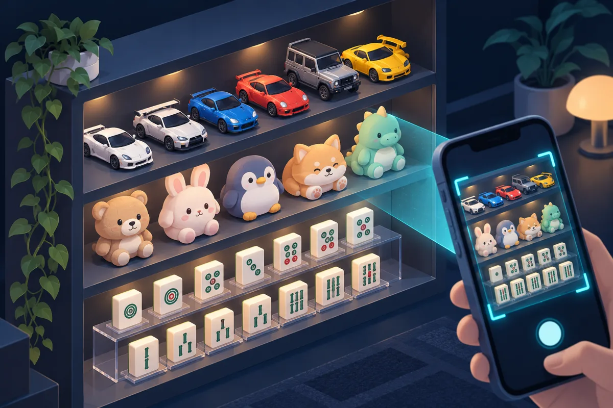

私人 AI 助理能做到的事
把 Claude 當成專屬助理 NOVA,實際用起來能做到這些。
01
理財投資
- 整合多個帳戶,建立全資產淨值帳本並定期對帳
- 逐筆整理美股、台股交易,算出真實年化報酬並和大盤比
- 盯著關注清單,價格偏離行情過多或跌到設定價時推播到手機
- 依近期平均走勢,定期自動重算買進參考價
- 健檢多年記帳資料,分析儲蓄率、訂閱支出與現金流
- 整理信用卡清單,每月提醒帳單並產出月報(只記卡號末四碼)
- 唯讀串接券商 API(程式對接介面),查詢持股與損益
- 計算黃金持有的真實成本
- 把稅務問題交給專門的稅務專家 AI 處理
02
生活旅遊
- 每天早上推播日本機票價格到手機
- 整理旅遊行程:航班、住宿、交通
- 統計歷次旅遊花費
- 把手機與社群相簿裡的大量照片自動分類歸檔
- 用人臉辨識,從社團活動的大量照片中找出有自己的照片
- 在 LINE 旅遊群組放一個多人共用的小幫手機器人
- 依指定地標,產生健行或單車的路線檔

03
收藏與興趣
- 拍收藏品(玩具車、公仔、娃娃)照片 → 自動查型號資料、建成可搜尋的圖鑑網站
- 做麻將聽牌計算網頁,拍照就能辨識手牌
- 用使用者標註的資料,持續微調自訓的辨識模型
- 架設私人電子書閱讀網站,有密碼保護,手機可用深色模式
- 提供星座專家 AI,回答星座相關問題
04
職涯工作
- 建立履歷母體資料庫,同一份事實產出多個版本的履歷
- 做個人作品集網站,內建 AI 問答,訪客可直接問「他做過什麼」
- 全面翻新求職平台上的履歷
- 製作面試準備頁、投影片與講稿
- 整理新工作的工作筆記
寫程式專案
- 做股票比較網站,台股、美股各一個
- 打造企業入口平台的基本骨架
- 寫資安掃描練習工具
- 把舊的 C++ 專案搬到新環境重新跑起來
- 盤點並清理所有程式碼倉庫(GitHub)
- 程式上傳後,自動確認自動化檢查是否通過
- 網站上線前,先跑一輪安全稽核
06
助理的底層能力
- 用 Telegram 隨時下指令,人在外面也行
- 接收語音訊息,在本機轉成文字,不上傳
- 提供語音對話網頁,喊名字就喚醒
- 用長期記憶系統,跨對話記得偏好與進度
- 自己當指揮官,把工作派給各領域的專家子助理
- 每天凌晨自動備份到雲端硬碟
- 整理 Obsidian 筆記庫
- 唯讀讀取信箱,可讀寫試算表
- 依日曆與待辦,定時提醒
- 攔截危險指令的安全閘
07
好習慣與隱私原則
- 敏感資料只記末四碼
- 敏感檔案在本機加密
- 語音在本機轉成文字
- 能唯讀就唯讀
- 花錢、刪除、對外發送,一律先問
- 完成要附上證據,不能只說做好了